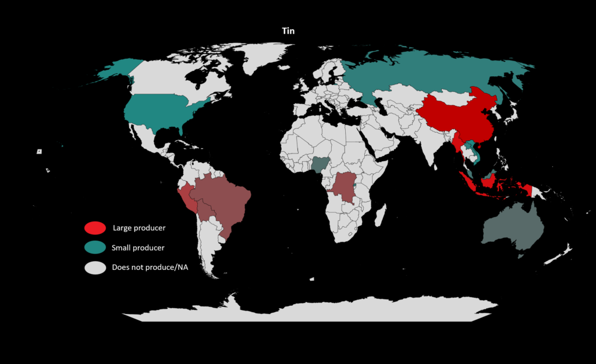

About 80 percent of the world’s tin comes from deposits of cassiterite (a tin oxide mineral) found in or near running water. Tin is obtained directly from cassiterite by roasting it with carbon in a decomposition reaction like so:
Tin is present in the igneous rocks of Earth’s crust, scarce but not rare. It is mainly found as stannic oxide, SnO2, but can sometimes occur in grains of native metal. China is one of the top producers of tin, and among others are Peru, Brazil, and Australia.
